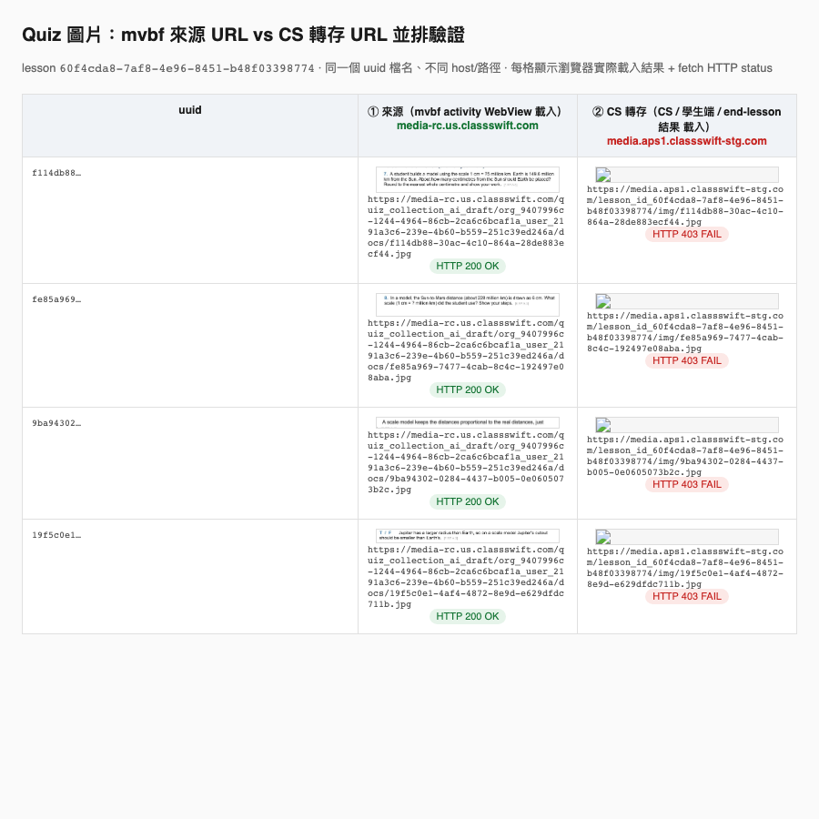

Findings — mvbf ↔ CS Android 一鍵派題
1. 完整版實作（2026-07-03，未 commit）
mvbf（edu-droid-flutter）— VSFT-7538
| Story | 實作 | 檔案 |
|---|---|---|
| 1-1 CTA | 雙層架構（滿足「ink 不遮擋按鈕」AC + 連體不分離）： ① 內容層（activity overlay，ink 之下、可被書寫）：WebView（ClipRRect 16）＋白色 tab 底座（固定 260×80、下圓角 16、右邊距 70，底座內不放按鈕）連體同 Stack，一體 drop shadow（ _QuizBundleShadowPainter 以 WebView 圓角矩形 ∪ tab 下圓角矩形的 union path 畫單一陰影，兩塊不互相投影；採 app design-system 卡片陰影 token：黑 @20% / blur 16 / offset (0,4)，見 vs_dropdown）。註：Figma REST API 對此 instance 取不到 library component 的 effects，故採 DS token 值；設計確有陰影。 ② chrome 層（ CanvasOverlayLayer，ink 之上）：藍色按鈕本體＝design-system VSElevatedButton（只覆寫 size = 212×56，其餘 primary/disabled 底色、圓角 RadiusTokens.v200=8、字級 body1 16/w400、padding、elevation 全部沿用 theme ElevatedButtonThemeData；無 icon）疊在 tab 底座位置；文字以 FittedBox(scaleDown) 包住 → 多語系（en「Start question(s)」/ zh_Hant「開始派題」/ zh_Hans「开始派题」）過長時等比縮小，不 overflow(紅線)、不換行（已實測三語系＋超長字串）；跟隨畫布（同 backgroundImageMatrix、同時訂閱 notifier+movingNotifier 兩個觸發）。幾何契約 QuizDispatchTabMetrics 兩層共用 → 永遠重合。busy 時單純 disabled（ #D7E5FD=accentBlue200，無轉圈，對齊 Figma disabled 變體 node 40008676-38157）。真機驗證：筆畫畫在卡片/tab 上、被按鈕蓋住、按鈕穿透筆畫仍可點。CanvasOverlayLayer 為通用 canvas chrome 層（跟隨畫布、在 stroke 之上、非 annotation 非持久化），日後同類控制項直接加入 _buildChildren，不另闢定位路徑。 |
canvas_overlay_layer.dart（新，chrome 層+幾何契約）、start_quiz_dispatch_button.dart（按鈕本體）、background_activity_overlay_layer.dart（tab 底座）、whiteboard.dart（掛載） |
| 1-2 點擊觸發 | QuizDispatchPhase(idle/launching/dispatching) 狀態機；點擊→disabled+loading；CS 未開→pending+TurnOnEvent（沿用 loading/OTA/token=Story 2-1）；ready 後 _consumePendingDispatchIfAny 自動送（3 個 emit-on 點，仿 VSFT-8429 pending window 模式）；15s timeout |
classswift_state.dart、classswift_bloc.dart、classswift_event.dart |
| 3-1 題型打包 | OlfQuizManifestReader.readQuizzes：Phase 1 四題型過濾（TRUE_FALSE/SINGLE_SELECT/MULTIPLE_SELECT/SHORT_ANSWER）+ cap 20 |
helper/olf_file/olf_quiz_manifest_reader.dart |
| 4-1 按鈕狀態 | isStartQuizDispatchEnabled = phase==idle && !isMissionOngoing；mission ONGOING（EventMissionStatus，既有）→ disabled，跨頁保持（bloc 全域） |
classswift_state.dart |
| 4-2 錯誤處理 | sendMessage 失敗 / EventCommandResult failed / 15s timeout → settled(false) → 按鈕復原 + toast；TurnOn 失敗路徑（_clearPendingWindow）一併 abort pending 派題 |
classswift_bloc.dart |
| 4-3 結束派題 | mission CLOSED → isMissionOngoing=false → 按鈕復原（既有 EventMissionStatus 流免費）；防禦：ONGOING 先到時收斂 in-flight 狀態 |
classswift_bloc.dart |
| i18n | classswift_start_questions key（en/zh_Hant_TW/zh_Hans_CN，命名對齊既有 classswift_* 前綴慣例）+ intl_utils regenerate；正式需把詞條加進 POEditor（其餘語言 fallback en）；bloc 內錯誤 toast 依 codebase 慣例英文 hardcode + TODO i18n |
l10n/intl_*.arb、generated/ |
CS Android（ragdoll-cat）— VSFT-9338
| Story | 實作 | 檔案 |
|---|---|---|
| 協定 | MessageDispatchQuiz：type/message/parser（payload.quizzes → List<QuizInCollectionData>，Moshi fromJsonValue） |
MyViewBoardMessageType/Message/MessageParser.kt |
| 2-2/2-4 未進班 | lessonId 空 → 派題 closure 存 pendingClassEntryWindowManager（VSFT-8429 機制），handleCreateLessonSuccess 進班時自動派；先回 success=「已受理」，之後失敗以 toast 呈現 |
MyViewBoardMessageHandler.kt |
| 2-4 Path A | 派題成功開視窗後 openJoinClassIfNoStudents()：studentManager.getCurrentAttendantList() 空 → JoinClass 並列 + bringToTop；≥1 不開（= Spinner 邏輯） |
同上 |
| 2-5.A 單題 | dispatchSingleQuiz：鏡射 performSingleDispatch（UNSPECIFIED guard → createQuizCancellingOngoingIfNeeded → QuizSharedUiInfo → MvbQuizDetailViewFactory.resolveStartWindow 依題型開 start window） |
同上 |
| 2-5.B batch | dispatchBatchQuiz：createBatchQuiz → 開 MvbBatchQuizStartWindow（公布答案/結束派題入口） |
同上 |
| collection_id | OLF 匯入題 id="" → collection_id=null（FK 修正）；4 個 response model 的 collectionId 改 nullable（Create/UpdateStatus/Summary/Latest） |
CreateQuizBody.kt + 4 responses |
真機回歸結果（2026-07-03，Pixel Tablet，adb 自動化實測）
| 情境 | 結果 |
|---|---|
| 非 quiz 頁（Activity_GAME）不顯示按鈕 | ✅ |
| quiz 頁顯示 Figma 樣式按鈕（"Start question(s)" i18n，無 icon） | ✅（design review 後改為錨在 activity 下方右對齊、隨 canvas 縮放、移除 icon —— 對齊 sparrow） |
| 冷啟動：CS off 點派題 → 自動喚起 → 選班窗（Story 2-1/2-2.A） | ✅ |
| 未進班 pending：Enter Class 後自動派出 batch（200, EventCommandResult success） | ✅ |
| Story 2-4：batch 控制視窗 + Join Class 並列（class ID/QR/學生名單） | ✅ |
| mission ONGOING → 按鈕 disabled（點擊無反應） | ✅ |
| End and review：finish/disclose/summary 全 200、10 題 review grid（collection_id 修正生效） | ✅ |
| 關 review → mission CLOSED → 按鈕復原（亮藍） | ✅ |
| 重派：復原後再點 → 新一輪 batch success（Story 4-1） | ✅ |
| 單題 N=1：mission_type=quiz、依題型開 MvbTextMultipleChoiceStartWindow、Responses 學生名單 | ✅ |
| 單題強制結束確認對話框（Story 4-3）→ CLOSED | ✅ |
- 單題 start window 的選項文字顯示原始 LaTeX（
$1\text{ cm}$）— CS 原生視窗不渲染 KaTeX，quiz HTML/學生端才渲染；內容格式 vs CS 顯示的既有議題。 - 不同 OLF 若用相同 activity id，暫存目錄（
temp/html-activities/<id>/）會互相覆蓋 manifest — 既有暫存機制行為，屬 OLF 生產端 id 唯一性假設。 - Join Class 並列判斷用
getCurrentAttendantList()：rejoin lesson 當下學生清單可能尚未同步完成 → 已有 1 學生仍短暫開出 Join Class；AC 字面（>1 才不顯示）下可接受。 - 15s timeout / sendMessage 失敗路徑未在真機演練（需人工製造斷線），邏輯已 code review + 與既有 pattern 一致。
範圍外（依 spec 明列 Phase 2/3）
- Path B shortcut（連續派題免重 join）、完整 retry、多頁狀態獨立、Late Join 長驗證
- Phase 2 題型（POLL/RECORD）—— 已在 mvbf 端過濾
- 已知次要 TODO：POEditor 詞條（
classswift_start_questions目前僅本地 arb）；pending-until-class-entry 期間 mvbf 按鈕可能短暫 enabled（mission ONGOING 到才鎖，選班中老師不可及、風險低）；按鈕在 activity 底部貼齊螢幕下緣時可能被切（sparrow 有GetActivityVisibleBottomLimit會壓縮 activity 讓出 button row，本次未實作該收斂，縮放/捲動可見）
2. 實測結果（2026-07-02，Pixel Tablet，stag/edla debug）
完整鏈路：
點「開始派題」→ mvbf 送 MessageDispatchQuiz(10題)
→ CS 解析成 List<QuizInCollectionData> → POST /lessons/{id}/quizzes/batch_quizzes
→ 200 OK batch_quizzes_id → EventCommandResult status=success 回 mvbf過程中踩到的唯一實錯：collection_id 外鍵違反（已修）
- 症狀：batch API 回 500，body：
ForeignKeyViolationError: quiz_collection_id_fkey — Key (collection_id)=(<OLF題id>) is not present in table "quiz_collection" - 原因：CS 既有
CreateQuizBody.fromQuizInCollectionData()把每題id塞進collection_id；正常「題庫派題」那 id 是真 collection row，但 OLF 匯入的題目 id 不是本後端 quiz_collection 成員 → FK 爆。 - 修正（皆在 CS 端）：
CreateQuizBody.fromQuizInCollectionData：collectionId = id.ifBlank { null }dispatchQuiz：OLF 題目.copy(sourceType="IMPORT_CONTENT", id="")→collection_id送 null
- 驗證：curl 重打
collection_id=null→ 200；app 重跑 → 200 success。
img_key 照樣寫入沒問題（圖片非阻因）；真正阻因純粹是 collection_id FK。同環境作者 → 派同環境後端時該 id 可能存在，但送 null（imported content 語意）最穩健。
3. TL;DR — 沒有硬技術卡點
整條路都落在既有基礎設施上，不需要新的傳輸機制、不需要傳檔案：
- 傳輸層已存在：mvbf ↔ CS 之間本來就有 AIDL 綁定（
IMyViewBoardBinder.send(String jsonMsg)/IMyViewBoardCallback.onEvent），且雙方同簽章、android:permission保護。 - 資產是 URL、不是檔案：quiz 由 CS Hub（african-golden-cat）生產，
img_url存 S3 HTTPS URL。mvbf 只需把 manifest 的 JSON 轉發，CS/學生端自行抓圖。pfd / ContentProvider / 複製檔案全部用不到。 - 派題能力已存在：CS 端
QuizManager.createQuizCancellingOngoingIfNeeded()（單題）/BatchQuizManager.createBatchQuiz()（多題）就是「既有派題 API」，單/多題由 CS 依題數分流。 - 欄位對齊：OLF manifest 的 quiz 欄位與 CS
QuizInCollectionData幾乎 1:1（quiz_type/option_type/option_list/short_answer/img_url），enum 值也一致（Hub ↔ CS Android granular 對齊，無 mapping）。
4. Audio open-question 的結論
會議（VSFT-9338）留的疑問「Audio / 圖片是 URL 還是本地路徑」：
- 圖片：
img_url= HTTPS URL（media-rc.us.classswift.com/...）。確定是 URL。 - Audio：本 spike 的樣本 OLF（
fixtures/mixed-activity-sample.olf）完全沒有 audio / RECORD 題。所以在此樣本語境下「audio 檔案傳輸」問題不存在。- 待補：若日後出現「題目自帶音訊」的 OLF，需確認它是 URL 還是封包內本地檔。
- URL → 同圖片，塞進 JSON 即可。
- 本地檔 → 才需要「一次性 ParcelFileDescriptor 派題當下讀取上傳」機制（派題是一次性、派完上 backend、不回頭讀 mvbf，故 pfd 最乾淨）。
- 待補：若日後出現「題目自帶音訊」的 OLF，需確認它是 URL 還是封包內本地檔。
5. 樣本 OLF 實測結構
fixtures/mixed-activity-sample.olf（zip）：
| 項目 | 內容 |
|---|---|
| Page 1 | Activity_GAME，source = 外部 HTTPS（jeopardy），不在派題範圍 |
| Page 2（多題 → Batch） | Activity_HTML_QUIZ（03d49337…），source = 本地相對路徑 + manifest.json。11 題：SHORT_ANSWER×3、SINGLE_SELECT×4（含 1 題 LaTeX 範例）、TRUE_FALSE×3、MULTIPLE_SELECT×1 → N≥2 走 Batch Quiz。註： manifest.json 與內嵌 index.html 已對齊為同 11 題（同順序 seq 1-11）；顯示與派題數一致。（原始 mvBW 匯出檔曾有 index 9 / manifest 10 的不一致——LaTeX 範例題只在 manifest 未進 index，2026-07-07 已把該題補進 index 並補上 MULTIPLE_SELECT，兩邊同步為 11。） |
| Page 3（單題 → Single）2026-07-03 新增 | Activity_HTML_QUIZ（c586d756…），manifest 僅 1 題（SINGLE_SELECT「Which planet is closest to the Sun?」無圖）→ N=1 走 Single Dispatch（create_quiz socket）。專供驗證單題分流。 |
| 圖片 | Batch 頁 4 題帶 img_url（HTTPS）；Single 頁無圖（避免破圖干擾單題測試） |
| Audio/RECORD | 無 |
6. 線路契約（本次定案）
新訊息型別 MessageDispatchQuiz（沿用既有 envelope：type / request_id / app_version / payload）：
{
"type": "MessageDispatchQuiz",
"request_id": "<uuid>",
"app_version": "...",
"payload": {
"quizzes": [ /* OLF manifest 的 quizzes[]，原樣轉發，欄位不轉換 */ ]
}
}- mvbf = pass-through：不轉換欄位、不 mapping enum。
- CS 端反序列化
payload.quizzes→List<QuizInCollectionData>；source_type由 CS 補為IMPORT_CONTENT。 - 單/多題分流由 CS 決定（會議：「題目判斷數量由 ClassSwift 實作」）：N=1 →
QuizManager，N≥2 →BatchQuizManager。 - 前置條件：老師須已在課堂中（
lessonId非空），否則派題 API 無法建題 → 回EventCommandResultfailed。 - 回傳：成功/失敗走既有
EventCommandResult（response_to = MessageDispatchQuiz）；「派題結束」複用既有EventMissionStatus（走 managers 自動送）。
7. Spike 改動範圍（未 commit）
CS Android（ragdoll-cat，Kotlin）— 收端 ✅ 編譯通過
MyViewBoardMessageType.kt：+MESSAGE_DISPATCH_QUIZMyViewBoardMessage.kt：+DispatchQuizsealed 子類、PAYLOAD_KEY_QUIZZES、requestId/responseTo/MyViewBoardResponseToMyViewBoardMessageParser.kt：+quizzesAdapter（MoshifromJsonValue）+parseDispatchQuizMyViewBoardMessageHandler.kt：注入QuizManager/BatchQuizManager、+DispatchQuiz分支、+dispatchQuiz()（N 分流 + lessonId gate +source_type=IMPORT_CONTENT）
mvbf（edu-droid-flutter，Dart）— 發端 ✅ analyze 通過
classswift_types.dart：+messageDispatchQuiz、keyQuizzesclassswift_event.dart：+ClassSwiftDispatchQuizEventclassswift_bloc.dart：註冊 +_onDispatchQuiz+_buildDispatchQuizMessagehelper/olf_file/olf_quiz_manifest_reader.dart（新）：從暫存目錄讀manifest.json的 quizzes[]（source 同層）background_activity_overlay_layer.dart：quiz 頁右下角疊「開始派題」按鈕（spike 觸發）
8. mvbw（Windows / edu-sparrow-app）參考實作對照
- mvbw = 純 transport：
StartQuizButtonViewModel.OnClick（src/Sparrow.UWP/Controls/Quiz/StartQuizButtonViewModel.cs:50-114）讀 manifest、TryParseQuizzes取整個quizzesarray、包成{"quizzes":[...]}、走 UWP AppService IPC（actionhost.command.session.startQuiz）送 CS。不解析欄位、不決定單/多題、不建 REST body、不碰 collection_id / source_type。 - ClassSwift 端才建 payload：collection_id / source_type / 單多題分流 / 呼叫後端全在 CS repo（不在 sparrow）。
- 對 Android 的印證：
- mvbf 只轉發
{"quizzes":[...]}→ 對應 mvbw 的 transport 角色。✅ - CS Android 端
dispatchQuiz建 body + 修collection_id→ 對應 mvbw「ClassSwift 端負責」。✅ 修正放對邊。 - 命名差異：Windows
startQuiz= 派 manifest；Android 既有MessageStartQuiz= 截圖開編輯窗（語意不同），故 Android 另立MessageDispatchQuiz正確。 - 回報差異：mvbw fire-and-forget + CS 非同步
CREATE_QUIZ_FAILED通知；Android 走既有同步EventCommandResult。皆為平台慣例差異。
- mvbf 只轉發
9. 已知限制 / 待辦（非技術卡點）
- 「開始派題」按鈕為 spike 最小版，非 Figma 規格 UI（按鈕狀態機、loading、error toast 皆未做）。已於完整版補齊
- 未處理派題狀態保留 / 重派 / Path A/B（Phase 2 scope）。
- 未接
EventCommandResult回派題結果到 UI（bloc 目前只 log + 失敗顯示 paused dialog）。已於完整版補齊 - audio 「題目自帶音訊」的 wire format 待有樣本再確認。
10. ✅ 派題圖片跨環境不支援（非 bug，2026-07-09 與後端確認）
- 本樣本 OLF 的 quiz 圖是 RC 產（
media-rc.us.classswift.com/quiz_collection_ai_draft/…）， 派到 stage 後端讀不出來是預期正常，不用修。 - 為何跨環境不行（by design）：派題時後端做 S3-to-S3「同一個 bucket」CopyObject
（
_copy_img_to_lesson_folder→s3_helper.copy_file_from_src_to_dest：CopySource.Bucket = target_bucket），不是用 HTTP 去下載那個公開 URL。 所以「圖片公開、知道網址就能開」≠「能跨 bucket 被 S3 copy」——來源物件不在派題環境的 bucket 裡就 copy 不到。 - img_url 是環境烙印：URL base
S3_URL_PREFIX_OBJECT由各環境設定（rc→media-rc…）， quiz 只存img_key、URL 在產出當下用該環境 base 組好；Hub 匯出 OLF 又原封嵌入 → env X 產的 OLF 派到 env Y（X≠Y）必失敗。 - 正確測法：同環境產題 + 派題（stage 產 → stage 派，或 rc 產 → rc 派）。同環境時來源 key 就在該 bucket → copy 成功、圖片正常。
- 下方「原始調查」當初把它當成「後端轉存 bug」，結論已修正為上述；調查內容保留供脈絡。
關鍵澄清：兩端載入的不是同一個 URL
直覺以為「mvbf 和 CS 抓的是同一張圖同一個網址」，其實檔名（uuid）相同、但 host 與路徑不同：
| 載入方 | 實際 URL | 結果 |
|---|---|---|
| mvbf activity WebView |
OLF index.html 內嵌 media-rc.us.classswift.com/quiz_collection_ai_draft/…/docs/<uuid>.jpg（來源原址） |
200 → 圖正常 |
| CS 題卡 / 學生端 / 結果 |
後端改寫後 media.aps1.classswift-stg.com/lesson_id_<lesson>/img/<uuid>.jpg（轉存路徑） |
403 AccessDenied → 破圖 |
Playwright 並排驗證（真瀏覽器同時請求兩個 URL）
同一頁面用 <img> 實際載入 + fetch() 取 HTTP status，4 組 uuid 全部：
左欄來源 4/4 RENDERED（HTTP 200），右欄轉存 4/4 BROKEN（HTTP 403）。

補充：同網域的 media.aps1…/avatar/12.svg 回 200 → 網域/CDN 本身正常，
只有「這個 lesson 的題目圖物件」缺席；且過數分鐘、加 Referer 重測仍 403 → 排除時間差與授權因素。
斷點定位
- mvbf → CS 的 IPC，
img_url傳的是來源media-rc.us…（logcat 已抓到完整 payload，正確）。 - CS 原樣 POST 給後端
POST /lessons/{id}/quizzes/batch_quizzes。 - 後端在回應把
img_url改寫成 lesson media 路徑（media.aps1/lesson_id_…/img/<uuid>.jpg），但「抓來源→複製到自家 bucket」這步沒成功，回了一個死 URL 且未回報錯誤。
→ mvbf 與 CS Android 兩端前端皆無問題；斷點在 CS 後端的圖片轉存（server-side copy）。
最可能原因與建議
- 跨區/跨環境：來源在
media-rc.us.classswift.com（美國 prod bucket），課堂後端在api-swift.aps1.classswift-stg.com（亞太 staging）；staging 複製 worker 很可能抓不到 US prod 來源 → 靜默失敗。可解釋「有些圖出得來、有些出不來」（視來源後端是否抓得到）。 建議開 CS backend bug…✎ 更正（2026-07-09）：非 bug，無需開單。 與後端確認後結論為「跨環境圖片本就不支援」（見本節頂端結論框）。當初這條把它當後端轉存缺陷是誤判： 跨環境 copy 失敗是預期，因為派題是 S3 同 bucket copy、非 HTTP 抓公開址。同環境產題+派題即正常。- 驗證跨區假設：拿「來源就在 aps1/stg 網域」的題目圖派派看，若成功即坐實。
- mvbf 端可選防禦：派題前確認
img_url為後端可 ingest 來源；或改走 presign 上傳（CS 已有ImageUploadView/awsPreSignedUrl.s3GetUrl，Sketch 題即是先上傳進自家 media 再用）。
驗證環境：Pixel Tablet（adb）+ Playwright headless Chromium；join 連結 s.mvb.fyi/join、class ID 65257528。
11. 🔴 冷啟動派題競態 — pending 派題被 abort（2026-07-08，已修 + E2E 驗證）
根因：既有的「MvbToken 冷啟動暫時失敗 → toggle off」誤殺了 pending 派題
派題流程本身設計正確：CS 未 ready 時派題存為 pending，於 _onReady（收到 EventLoginStatus=success）由 _consumePendingDispatchIfAny 送出。問題出在啟動握手的另一條路徑：
- 冷啟動時 mvbf 送
MessageMvbToken（token 交握），CS service 尚未起完 → 回failed / reason_code=invalid_mvb_token（"mvb_token is required."）。 - bloc 既有邏輯把
MessageMvbToken失敗當關鍵指令致命失敗 →ClassSwiftTurnOffEvent→ 連帶_abortPendingDispatch（靜默丟掉 pending 派題）。 - 但約 3 秒後 CS 其實
EventLoginStatus=success→ ready；此時 pending 早已被丟 →_consumePendingDispatchIfAny無題可送 → CS 從未收到派題。
_abortPendingDispatch / _pendingDispatchQuizzes / _consumePendingDispatchIfAny）是 VSFT-7538 本次新增，HEAD 不存在。
即：race 本身既有（原本只讓 toggle 閃一下 off→on，無害），但本功能把 pending 派題掛上該 toggle-off 路徑，才使它放大成「派題靜默丟失」的使用者可見 bug。
修正（mvbf，未 commit）
把 MessageMvbToken 的冷啟動暫時性失敗與真失敗區分：reason_code 屬 transientMvbTokenFailReasons（invalid_mvb_token / service_not_started）時不 toggle-off、不 abort pending，交由 _onReady（consume）或派題 15s timeout（真失敗 → CS 不會 ready → 逾時顯示錯誤 toast）收斂。改於 classswift_bloc.dart 的 EventCommandResult 處理 + classswift_types.dart 新增常數。順帶讓既有 toggle 冷啟動行為更穩（不再無謂閃動）。
| 冷啟動同一路徑 | 修正前 | 修正後 |
|---|---|---|
MvbToken invalid_mvb_token | _abortPendingDispatch（丟派題） | 視為暫時、不 abort |
| CS ready 後 | pending 已空 → CS 收不到 | _consumePendingDispatch send quizzes=11 |
| 結果 | ❌ 派題靜默丟失 | ✅ CS POST batch_quizzes → 200 → mission ONGOING |
E2E 驗證（jay-poc-cli-executor，冷啟動路徑）
scenarios/vsft-7538-batch-e2e.yaml：開 OLF → 導到多題頁 → 不預先暖機 CS → 點派題（isOn=false 走 pending）→ 斷言。PASSED，logcat 實證：
- ① mvbf：
_onDispatchQuiz quizzes=11 - ②
_consumePendingDispatch send quizzes=11（pending 被 consume，非 abort） - ③ CS：
--> POST .../quizzes/batch_quizzes→<-- 200 OK（batch_quizzes_id）→EventMissionStatus batch_quizzes ONGOING
另附 3 條自動化 scenario：vsft-7538-batch-dispatch（送 11）、vsft-7538-single-dispatch（送 1）、vsft-7538-batch-e2e（冷啟動全鏈）。前置：mvbf debug + kEnableAppiumIntegration、按鈕 ValueKey/semanticsId；CS 版本 ≥ OTA 要求（本機 bump 到 1.14.0）。
invalid_mvb_token 在「使用者真的無 token（未登入）」時也可能出現；本修正在該情況會靠派題 15s timeout 收斂（顯示錯誤 toast），但 toggle 可能短暫停在 on。若要更嚴謹，可改用「launch 進行中才視為暫時」的狀態判斷，而非只看 reason_code。
12. 🐛 派題按鈕 enable 狀態 — spec 兩條規則矛盾（PM 已定案）
✅ PM 定案（2026-07-10，Fred）
spec 兩條規則在「檢視中」互相矛盾
| 來源 | gate 依據 | 「End and review 後、result 視窗還開著」時 |
|---|---|---|
| 主 spec Story 4-1「派題期間的按鈕狀態管理」 | quiz STATUS：OPEN→disable；FINISH/DISCLOSED/CLOSE→enable（重派觸發） | DISCLOSED → 應 enable |
| 主 spec Story 4-3「結束派題回到簡報」 | 「ClassSwift 視窗已收合 → 按鈕回復可點」 | 視窗未收合 → 應 disable |
兩條打架 → 這就是實作與體感矛盾的根源。依 PM 定案，以 Story 4-1（status-based）為準；Story 4-3「視窗收合」敘述需修正/澄清。
根因：CS 的 EventMissionStatus 沒帶 quiz 生命週期 status
mvbf 現行 gate（classswift_state.dart）：
isStartQuizDispatchEnabled = quizDispatchPhase == idle && !isMissionOngoingisMissionOngoing = (EventMissionStatus.status == ONGOING || == VISIBLE)；MINIMIZED→false；quiz 視窗CLOSED→清除。
而 CS EventMissionStatus.payload = { mission_type, status }，status 常數（classswift_types.dart）只有 ONGOING / VISIBLE / MINIMIZED / CLOSED——全是視窗呈現態，沒有 FINISH/DISCLOSED/OPEN 這種 quiz 生命週期狀態。所以 End and review 後 result 視窗還開著時 CS 只送 VISIBLE，mvbf 分不出「OPEN+可見」與「DISCLOSED+可見」，兩者都當 ongoing → disable。
MINIMIZED（縮小）或 CLOSED（關窗）——正好對應 Story 4-3「視窗收合」，而非 Story 4-1「quiz 已結束」。
修法選項
| 修在哪 | 做法 | 備註 | |
|---|---|---|---|
| A | mvbf（edu-droid-flutter） | 監聽 EventWindowStateChanged 的 MVB_BATCH_QUIZ_RESULT 視窗——它一出現即代表 quiz 已結束進檢視 → 視為 ended → enable（不再受 VISIBLE 壓成 disable） | mvbf 已收到此事件（log 有），現未用於派題 gate。client-side 可修，屬 heuristic（靠 result 視窗 tag 推斷） |
| B ✅ 採用 | CS（ragdoll-cat）+ mvbf | quiz 結束時 CS 多送 FINISHED status，mvbf 用它 gate | 契約最乾淨、Windows(sparrow) 也受惠 |
測試中另抓到並修掉一個 mvbf UI bug：
start_quiz_dispatch_button.dart 的 buildWhen 原本只比對 isMissionOngoing，但 FINISHED 時它維持 true（不變）→ 按鈕不 rebuild、停在 disabled；已補比對 isMissionFinished。
- CS（ragdoll-cat）：
EventMissionStatus.Status新增FINISHED；UnclosedMissionUiManager加finishedMissionSet+notifyMissionFinishedIfNeeded()（發 FINISHED 但不動 ongoingMissionSet，故關窗仍會發 CLOSED；檢視中最小化→還原時bringOngoingMissionToTop重發 FINISHED 而非 ONGOING，避免還原後又 disable）。注入點：batch =MvbBatchQuizStartWindow.handleEndResult；single =QuizStartWindowModel.changeQuizState(QUIZ_RESULTS) +TrueFalseWindowModel/MultipleChoiceWindowModel.triggerQuizResultState。compileRcDebugKotlin✅。 - mvbf（edu-droid-flutter）：
classswift_types.dart加statusFinished='FINISHED'；classswift_state.dart加isMissionFinished，gate 改isStartQuizDispatchEnabled = idle && !(isMissionOngoing && !isMissionFinished)（FINISHED 時 isMissionOngoing 仍 true → toolbar Quiz 維持 Selected，只放行 CTA）；_onMissionStatusChanged處理 FINISHED；4 個 session 重置點一併清isMissionFinished。dart analyze✅（僅既有 warning）。 - harness：已移除
cs-tap-end-and-review的第 2 步 workaround，end-lesson斷言＝「End and review 後直接 enable」——B 修好後應直接 PASS。
對 E2E harness 的影響（jay-poc-cli-executor）
先前 cs-tap-end-and-review 加了「再關 result 視窗（iv_mbqr_close）」的第 2 步 workaround，讓 vsft-7538-end-lesson 配合現行（視窗收合才 enable）行為過關。依 PM 定案，此 workaround 應移除，end-lesson 斷言改回「End and review 後直接 enable」——修好產品（A 或 B）前此斷言會 fail，正好標示此 bug。